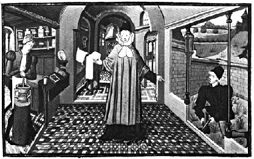

ŞEKİL 21. Guy de Chauliac’ın Chirurgia magna’sında yer alan bu resimde, bir 14. yüzyıl cerrahının evindeki eczane görülmektedir. Hizmetkârlardan biri bahçeden şifalı ot keserken, diğeri hekimin gözetimi altında onu havanda dövüyor [Bernardus de Gordonio’nun (~1260-1318) Lilium medicinae (1461) adlı eserinden; Bibliothèque Nationale de France, Paris].46
16. yüzyıl İtalya’sının soylu kesiminde bahçecilik entelektüel uğraş mekânı ve bir moda halini almıştır. Melchiorre Guilandino (ölm. 1589) 1558-1561 yılları arasında Padova bahçelerinde Orta Doğu ağaçlarını incelemiş ve İstanbul’dan Filistin, Arabistan ve Mısır’a dek bölgeyi gezmiştir. Rönesans dönemi Kuzey İtalya’sının yeni mesleği olarak botanik öğretmenliğinin en erken ve en etkili temsilcilerinden biri olan Luca Ghini (1490-1556), şifalı bitkileri kurutulmuş halde depolamaya önem vermiş, bu “kurutulmuş ot bahçeleri” (“horti sicci”) uygulaması daha sonra bir yenilik olarak doğa tarihi müzelerine dönüşümü getirmiştir. Ghini’nin en önde gelen öğrencilerinden Ulisse Aldrovandi (1522-1605) böyle bir müzeyi Bologna’da gerçekleştirmiş, Verona’lı eczacı ve koleksiyoncu Francesco Calzolari (1521-1600) de bir doğa tarihi müzesi kurmuştur. Venedik’li soylu Pietro Antonio Michiel’in (1510-1576) Venedik’teki botanik bahçesi, o zamanın en ünlü bahçelerinden biri idi. Rönesans döneminde Dioskorides’i en erken çevirenlerden biri olan Venedik soylusu Ermolao Barbaro (1454-1493), 1480’lerde yarım gününü bahçe tasarımıyla geçiriyordu. Luigi Anguillara (~1512-1570) Padua’daki en eski botanik bahçesinin ilk yöneticisi idi. Portekiz’li hekim ve yazar Amato Lusitano (1511-1568) ise In Dioscoridis Anazarbei De medica materia libros quinque Amati Lusitani... (Anazarba’lı Dioskorides’in De materia medica’sı Üzerine Amato Lusitano’nun Yorumlarının Beş Kitabı) (1558) başlığı altında Dioskorides’e yorumlar yazıyordu.
Nürnbergli botanikçi-eczacı Basilius Besler’in (1561-1629) Hortus Eystettensis (Eichstädt Bahçesi) (Nürnberg, 1613) adlı büyük boy eseri, resimli botanik kitapları arasında en önemlilerinden biri olup “bugüne dek hazırlanmış resimli en güzel botanik kitabı” olarak da nitelenmektedir. Eser, doğal boylarındaki resim levhaları eşliğinde, dört mevsime göre düzenlenmiş 1000’i aşkın sayıda bitkiyi içermektedir. Bu bitkilerin bir kısmını yazarın kendisinin çizip baskıya verdiği kesin olarak anlaşılmıştır.47
Kimi zaman yazarının hekim ve botanikçi Johannes von Cuba (Johannes Wonnecke aus Kaub) (1464-1503) olduğu söylenen, ilk baskıları Peter Schöffer (1425-1502) tarafından 1485’te, ardından Mainz’lı Jacob Meydenbach (1491) ve son baskısı Meydenbach’lı Johannes Prüss (1497) tarafından yapılan, Almanca adı Gart der Gesundheit (Sağlık Bahçesi) olarak konan (H)Ortus sanitatis (Sağlık Bahçesi) adlı eser, çeşitli kaynaklardan yapılan derlemeye dayalı önemli bir çalışma olup pek çok ilaç bitkisini içermektedir. Eserde kullanım bilgileri verilen bitkilerin yanı sıra hayvanlar, kuşlar, balıklar ve taşlar hakkında da ek bilgiler yer almaktadır. Zengin şekilde resimlenmiş olup genellikle “Eski Dünya”nın bitkilerini konu edinmektedir ve yeni keşfedilen Amerika’nın (“Yeni Dünya”) bitkilerine yer verilmemiştir. 1066 bölüm halinde düzenlenmiştir ve zamanının en kapsamlı şifalı bitki eseridir. Özgün dili olan Latince’den daha sonra Almanca, Fransızca, İngilizce ve Flamanca’ya da çevrilmiştir.20 ŞEKİL 22 - ŞEKİL 25’te eczacı ve aktar konulu çeşitli resimler yer almaktadır.